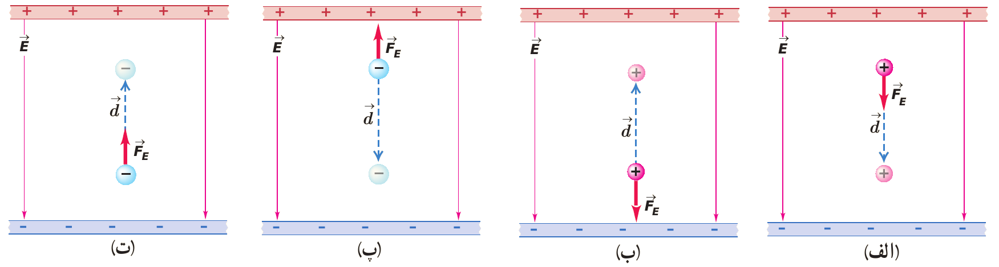
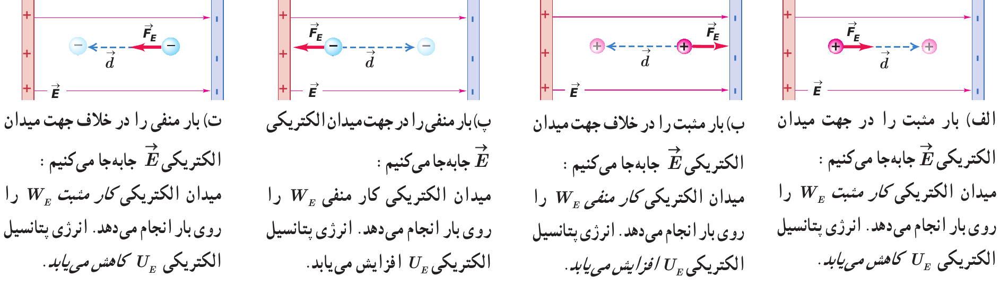

انرژی پتانسیل الکتریکی
تعریف 12 اگر دو بار همنام را به هم نزدیک یا دو بار ناهمنام را از هم دور کنیم بعد از رها شدن شروع به حرکت میکنند. پس میتوان نتیجه گرفت که در آنها انرژی پتانسیلی ذخیره شده که تبدیل به انرژی جنبشی میشود. که آنرا انرژی پتانسیل الکتریکی میگوئیم
\[ \overset{q_1}{\underset{(*)}{\bullet}} ------ \overset{v_1=0}{\overset{q_2}{\underset{(1)}{\bullet}}} \rightarrow\rightarrow\rightarrow \overset{v_2=v}{\overset{q_2}{\underset{(2)}{\bullet}}} \]
\[ \Delta U_E = \frac{1}{2}mv^2 \]
تعریف 13 کار نیروی الکتریکی وارد بر یک ذره باردار در میدان الکتریکی یکنواخت \(\vec{E}\) در یک جابجایی مشخص برابر با منفی تغییر انرژی پتانسیل الکتریکی در همان جابجایی است:
\[ \overset{\Large|+|}{ \underset{\Large|+|}{ \overset{\Large|+|}{ \underset{\Large|+|}{ \overset{\Large|+|}{ \scriptsize|+|}}}}} \; \overset{\vec{E}}{ \underrightarrow{ \overrightarrow{ \underrightarrow{ \overrightarrow{ \quad \overset{q}{\underset{(1)}{\bullet}} \overset{\vec{d}}{ \overrightarrow{\underset{\vec{F}=|q|\vec{E}}{\longrightarrow\quad}}} \overset{q}{\underset{(2)}{\bullet}} \quad }}}}} \overset{\Large|-|}{ \underset{\Large|-|}{ \overset{\Large|-|}{ \underset{\Large|-|}{ \overset{\Large|-|}{ \scriptsize|-|}}}}} \]
\[ \begin{aligned} W_E & = - \Delta U_E = -(\downarrow U_2 - \uparrow U_1) \\ W_E & = F_E d \cos{\theta} \\ & =|q|Ed \cos{\theta} \\ \Delta U_E & = - |q|Ed \cos{\theta} \end{aligned} \]
مثال 39 در هریک از شکل های زیر، با توجه به علامت بار ذره جابه جا شده، و جهت میدان الکتریکی \((\vec{E})\) و جهت نیروی الکتریکی \((\vec{F})\) و جهت جابهجایی ذره \((\vec{d})\) تعیین کنید که کار نیروی الکتریکی \((W_E)\) مثبت است یا منفی و انرژی پتانسیل الکتریکی \((U_E)\) کاهش یافته یا افزایش.

نمایش پاسخ
مثال 40 بار الکتریکی \(+4\mu C\) درون میدان یکنواخت شکل مقابل جابهجا میشود. تغییرات انرژی پتانسیل الکتریکی بار چند ژول خواهد شد؟
\[ \underrightarrow{\quad E = 3 \times 10^{5} \frac{N}{C}} \\ \underrightarrow{B \bullet \quad \quad \quad \quad \quad \quad} \\ \underrightarrow{\quad {\quad}_{53^\circ} \nwarrow {\small 80cm} \quad} \\ \underrightarrow{\quad \quad \quad \quad \quad \;\bullet A \quad} \\ \]
نمایش پاسخ
\[ \require{cancel} \begin{aligned} \Delta U_E & = - |q|Ed \cos{\theta} \\ & = - 3 \times 10^{5} \times 4 \times 10^{-6} \times 0.8 \times \cancelto{-0.6}{\cos{53^{\circ}}} \times J \\ & = 12 \times 0.48 \times 10^{-1} J \\ & = 5.76 \times 10^{-1} J \end{aligned} \]مثال 41 در شکل زیر نیروی وارد بر بار \(q<0\) در نقاط \(A\) و \(B\) برابر \(F_A\) و \(F_B\) و انرژی پتانسیل الکتریکی بار در این نقاط \(U_A\) و \(U_B\) است. کدام رابطه صحیح است؟
\[ \boxed{++++++} \\ {\Large \bullet} A \quad \quad \\ \quad \quad \\ \quad \quad B {\Large \bullet} \\ \boxed{------} \]
- \(F_A = F_B\) و \(U_A > U_B\)
- \(F_A > F_B\) و \(U_A < U_B\)
- \(F_A < F_B\) و \(U_A > U_B\)
- \(F_A = F_B\) و \(U_A < U_B\)
نمایش پاسخ
گزینه ۴:
چون میدان در همه نقاط ثابت و یکنواخت است پس نیرویی که که به بار ثابت وارد می شود ثابت است اما انرژی پتانسیل برای بار منفی در جهت میدان افزایش مییابد.مثال 42 در شکل مقابل انداره میدان \(10^{5} \frac{N}{C}\) و بار الکتریکی \(-5 \mu C\) است. اگر در نقطه \(B\) رها شود در نقطه \(A\) انرژی جنبشی آن چند ژول میشود؟
\[ \overset{\vec{E}}{ \underrightarrow{ \overrightarrow{ \underrightarrow{ \overrightarrow{ A \bullet \overset{\quad d_{AB} = 20cm \quad}{------} \bullet B \quad }}}}} \]
- \(0.1\)
- \(0.5\)
- \(0.01\)
- \(0.05\)
نمایش پاسخ
\[ |+| \overset{E}{ \underrightarrow{\overrightarrow{A \bullet ---- \underset{\overleftarrow{\vec{F}}}{\overset{\underleftarrow{\vec{d}}}{-}} \bullet B }}} |-| \]
\[ \require{cancel} \begin{aligned} \Delta U_E & = - |q|Ed \cos{\theta} \\ & = - 5 \times 10^{-6} \times 10^{5} \times 0.2 \times 1 \times J \\ & = 12 \times 0.48 \times 10^{-1} J \\ & = -1 \times 10^{-1} J \\ \Delta K & = - \Delta U_E \\ \Delta K & = + 1 \times 10^{-1} J \\ & = K_A - \cancelto{0}{K_B} \\ K_A & = + 0.1 J \end{aligned} \]مثال 43 بار \(-10 \mu C\) در میدان یکنواخت \(4 \times 10^{5} \frac{N}{C}\) مطابق شکل از \(A\) تا \(B\) جابجا میشود. اگر جرم آن \(0.4g\) باشد و تندی آن در \(A\) برابر \(100\frac{m}{s}\) در راستای نشان داده شده باشد تندی آن در \(B\) تقریبا چند \(\frac{m}{s}\) است.
\[ \underrightarrow{\quad \;\;\; E \quad \quad \quad \quad \quad} \\ \underrightarrow{\quad \quad \quad \quad \quad \; \bullet A \quad} \\ \underrightarrow{\quad \; 8m \swarrow_{60^\circ} \;\; \quad \quad} \\ \underrightarrow{B \bullet \quad \quad \quad \quad \quad \quad} \\ \]
- \(400\)
- \(300\)
- \(160\)
- \(4\)